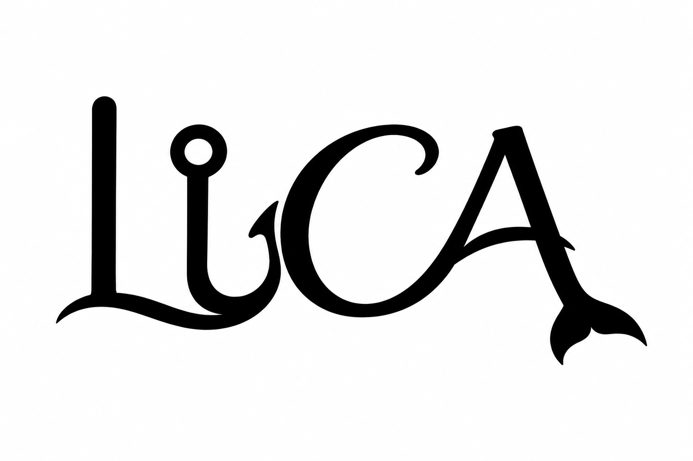
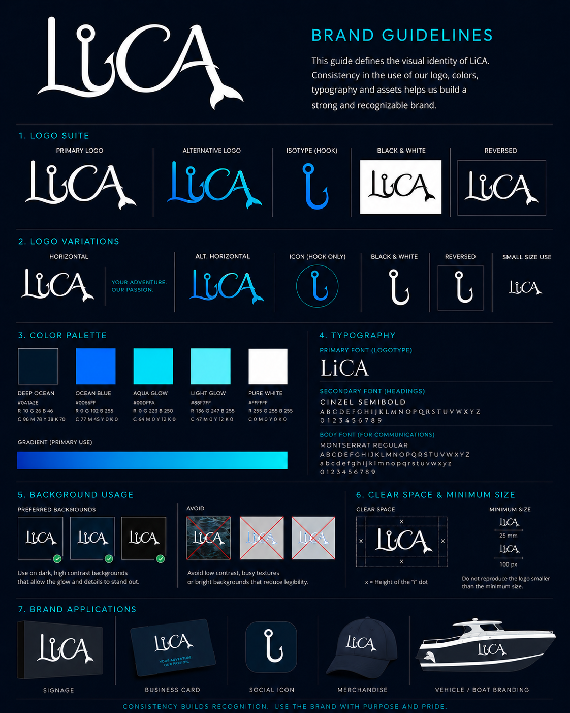
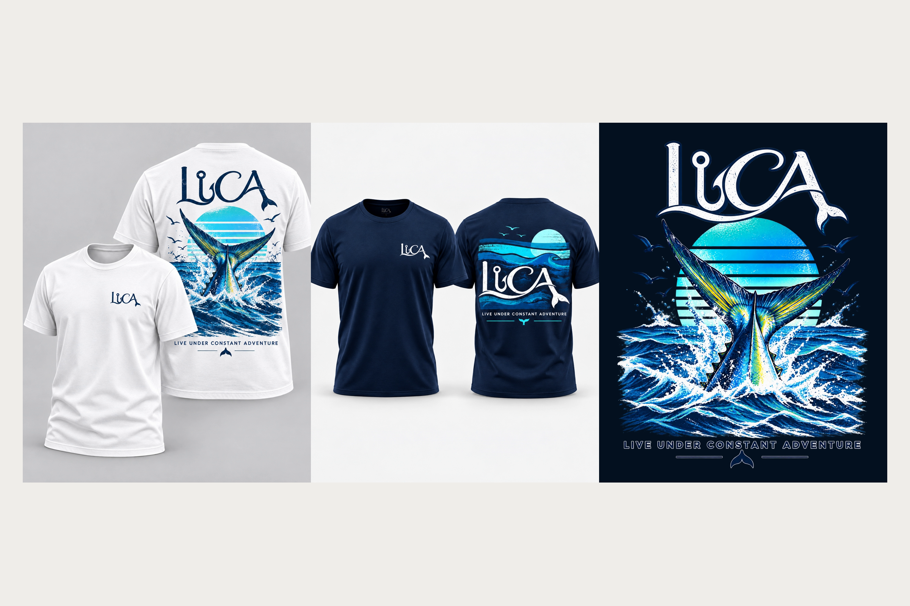
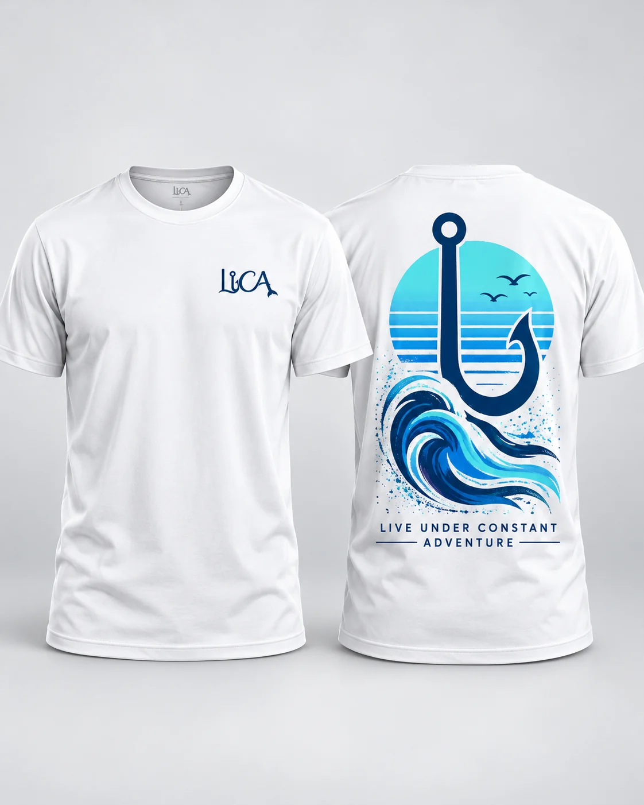
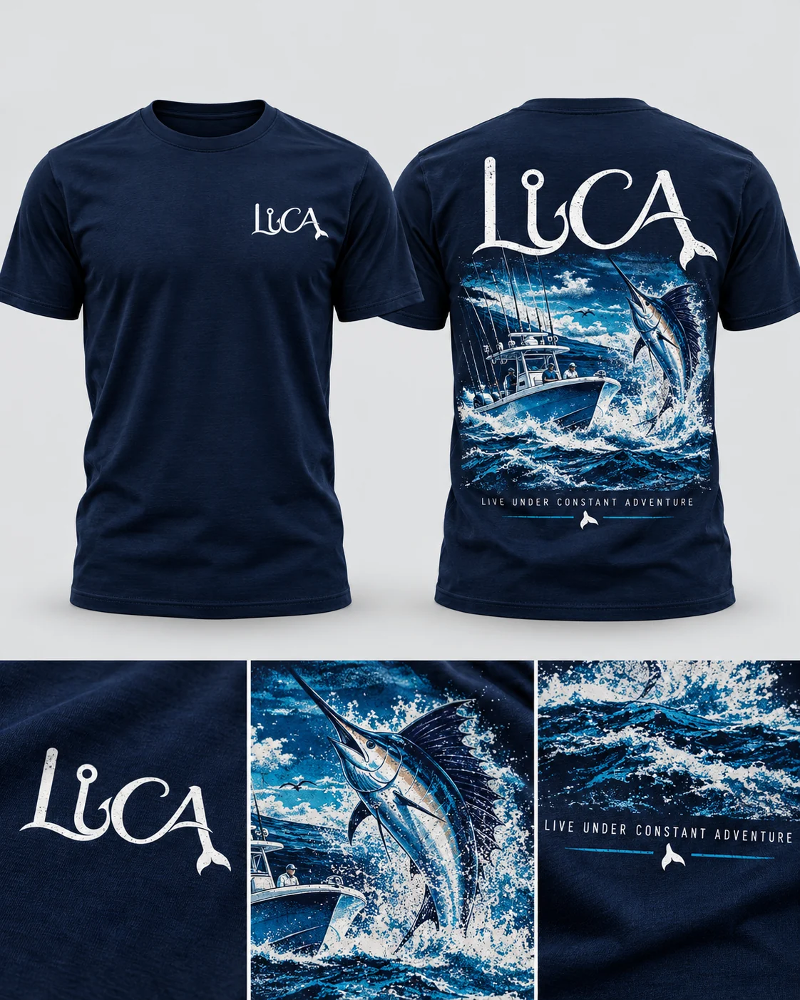
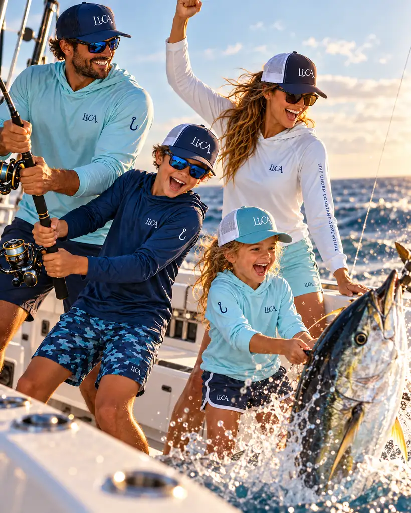

02 / Challenge
The question.
How could we turn a multigenerational love of fishing into a recognizable apparel brand — one that honors the family's son and their first tuna while feeling unmistakably connected to the sea?
Case Study / 07
A fishing apparel brand born from a family's love of the ocean, passed from generation to generation.

01 / LUCA · The logo01 / Context
LUCA began with a family's love for fishing — a passion passed down from one generation to the next. Long before their first son, Luca, was born, the family caught their first fish: a tuna. That catch became part of the family's story and later inspired one of the illustrations featured on the brand's fishing T-shirts.
The name carries two meanings. LUCA honors the family's first son, while its letters stand for Live Under Constant Adventure — a phrase that captures the spirit of life on the water. What began as a personal story became the foundation for a family-centered fishing apparel brand.
02 / Challenge
How could we turn a multigenerational love of fishing into a recognizable apparel brand — one that honors the family's son and their first tuna while feeling unmistakably connected to the sea?
03 / Objectives
04 / Process
The story guided the design decisions. First came the name LUCA, connecting the family's son to the words “Live Under Constant Adventure.” Then we explored how waves, a fishing lure and a fish tail could work together inside the composition of the LUCA lettering, rather than appearing as unrelated symbols. The apparel applications extend the same language, including the tuna that recalls the family's earliest catch.
05 / Solution
LUCA's logo brings together the brand's name and the world of fishing. Waves, a lure and a fish tail are woven into the composition of the LUCA acronym. The resulting visual language is extended into a brand sheet and fishing apparel graphics — a family story translated into an identity people can wear.
THE STORY BEHIND LUCA
Four connected ideas shape the identity: family, adventure, a first catch, and the symbols of fishing itself.
Fishing is a family passion, shared from one generation to the next. The brand begins with that bond and carries it forward.
Named for the family's first son, Luca, the acronym transforms a personal name into an invitation to keep exploring.
Before Luca was born, the family's first fish was a tuna. Its story inspired one of the illustrations used on the fishing T-shirts.
The logo combines these familiar elements of fishing within the composition of the LUCA letters, making the name and the activity inseparable.
06 / Visual explorations
The LUCA logo leads the story. Brand identity work comes first, followed by T-shirt concepts and lifestyle imagery that bring the family-fishing spirit to life.






07 / Results
The project translates a meaningful family story into a fishing-apparel brand: a name inspired by Luca and the spirit of adventure, a logo built from fishing symbolism, and visual applications that connect back to the family's first tuna catch.
This case study describes the brand concept and design work. Commercial performance and customer-impact metrics have not been provided.